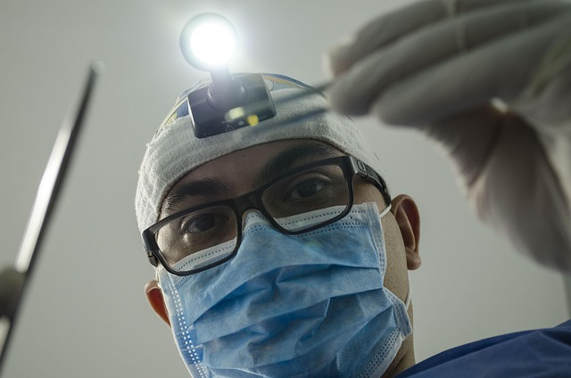

Спеціалізація: лікування собак, котів, гризунів та птахів
Ветеринарна клініка "Зоосвіт" — це сучасний медичний центр для тварин, який поєднує багаторічний досвід, турботу та індивідуальний підхід до кожного пацієнта. Ми надаємо широкий спектр послуг: від консультацій та вакцинацій до складних хірургічних втручань. Наша команда складається з кваліфікованих ветеринарів, які постійно підвищують свій професійний рівень.
Ми розуміємо, наскільки важливо для власників тварин отримати не лише якісну медичну допомогу, а й підтримку в складні моменти. Саме тому "Зоосвіт" створює комфортні умови для пацієнтів та їхніх господарів, забезпечуючи турботу, швидку діагностику та ефективне лікування.
Наші лікарі та їх досвід:
Сошенко Андрій Анатольєвич
2006–2008 — навчання в НСГАУ
2008–2015 — робота у клініці "Айболит"
2016 — робота у клініці "Зоосвіт"
Мацко Валентина Михайлівна
2006–2008 — навчання в НСГАУ
2008–2015 — робота у клініці "Айболит"
2016 — робота у клініці "Зоосвіт"
Хорватий Сергій Петрович

2005–2007 — навчання в НСГАУ
2008–2015 — робота у клініці "4 лапи"
2016 — робота у клініці "Зоосвіт"
Послуги:
Послуга
Ціна, грн
Вакцинація
300
УЗД
400
Стерилізація
800
Як записатися на прийом:
Відкрийте розділ "Контакти" або натиснить конопку
.
Заповніть форму електронного запису: ім'я, прізвище, телефон.